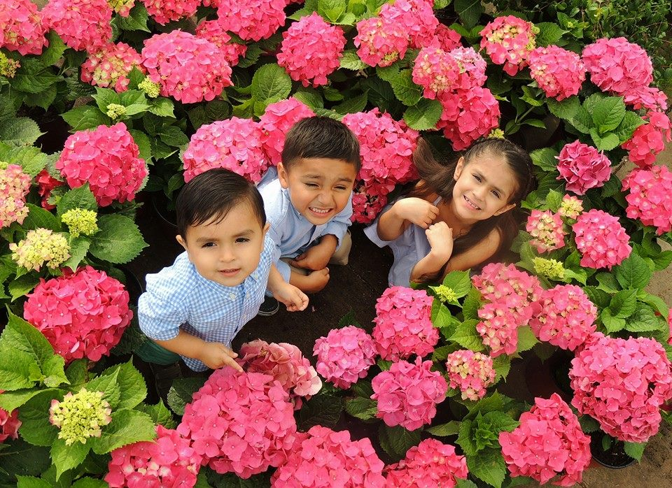

About Us

A Growing Tradition
Mansfield Gardens is a family owned garden center. The retail location opened it's doors in November of 2014, however the team behind Mansfield Gardens has been growing quality flowers in Mansfield, Texas for many years.
Horticulturalists by nature, we make certain that any plant you purchase from Mansfield Gardens will suit your needs and enhance your surroundings.
We specialize in annuals, perennials, native plants & offer premium bedding, flowers, trees, shrubs, seeds, various garden decorations, landscape design/ installation & much more at an affordable price!
Our Mission
Quality Plants - Reasonable Prices - Exceptional Service